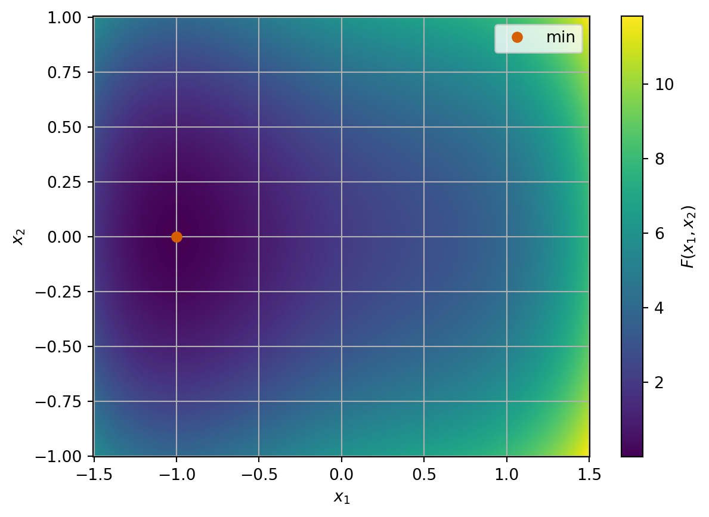
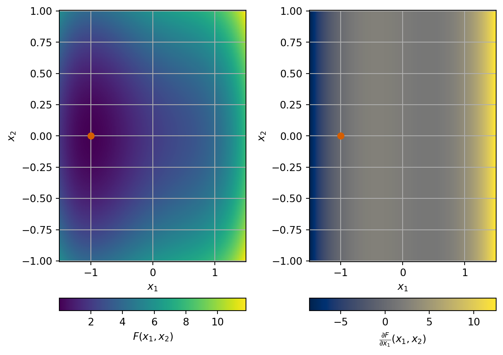
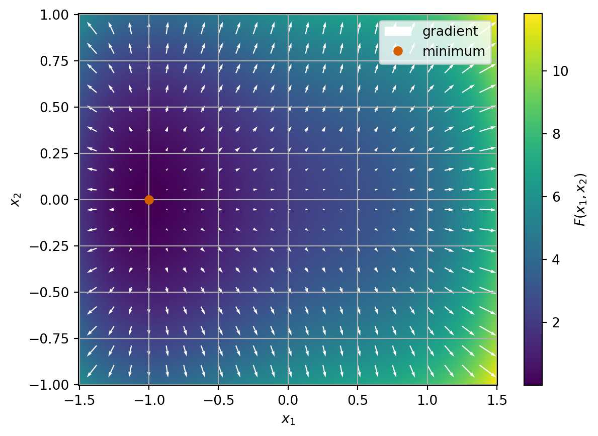

7 What about functions with higher dimension domains?
When we were working with a function \(F \colon \mathbb{R} \to \mathbb{R}\), we had the key idea to find the points where the derivative of \(F\) is \(0\). We have developed theory to tell us when these points are local or global minima and some methods to find these points.
When working with functions with two-dimensional (or more) domains, how do we compute derivatives?
Throughout this section we will work with the example function: \[ F(x_1, x_2) = x_1^4 - x_1^2 + 2 x_1 + 4 x_2^2 + 2. \] This function has a unique minimum at \(\vec{x}^* = (-1, 0)\) where \(F* = 0\).
7.1 Directional derivatives
Somehow we want to use the idea that if you move away from the minimum in any direction then the function increases. Mathematically, we could write this as saying: A point \(\vec{x}^*\) is a local minimum if, for any direction \(\vec{v} \in \mathbb{R}^n\), the value \(h = 0\) is a local minimum of: \[ \gamma_{\vec{v}}(h) = F(\vec{x}^* + h \vec{v}) \ge F(\vec{x}^*) \quad\text{for all small}\quad h. \] We could try to use our ideas from one dimension then by considering the function \(\gamma_{\vec{v}} \colon \mathbb{R} \to \mathbb{R}\). This is a well-defined one-dimensional function so we can apply all our theory as before.
Example 7.1 Consider the function \[ F(x_1, x_2) = x_1^4 - x_1^2 + 2 x_1 + 4 x_2^2 + 2 \] and the directions \(\vec{v} = (1, 0)^T, (0, 1)^T\) and \((1, 1)^T\). Find \(\gamma_{\vec{v}}(h)\) and \(\gamma'_{\vec{v}}(h)\) at \(\vec{x}^* = (-1, 0)\).
- For \(\vec{v} = (1, 0)^T\), we have \[\begin{align*} \gamma_{\vec{v}}(h) & = F(-1 + h, 0) \\ & = (-1 + h)^4 - (-1+h)^2 + 2 (-1+h) + 4 \times 0^2 + 2 \\ & = (-1)^4 + 4 \times (-1)^3 \times h + 6 \times (-1)^2 \times h^2 + 4 \times (-1) \times h^3 + h^4 \\ & \qquad - (-1)^2 - 2 \times (-1) \times h - h^2 + 2 \times (-1) + 2 \times h + 0 + 2 \\ & = 1 - 4h + 6 h^2 - 4h^3 + h^4 - 1 + 2h - h^2 - 2 + 2h + 2 \\ & = h^4 - 4h^3 + 5 h^2, \end{align*}\] so \[\begin{align*} \gamma'_{\vec{v}}(h) & = 4 h^3 - 12 h^2 + 10 h. \end{align*}\]
- For \(\vec{v} = (0, 1)^T\), we have \[\begin{align*} \gamma_{\vec{v}}(h) & = F(-1, 0 + h) \\ & = (-1)^4 - (-1)^2 + 2 \times (-1) + 4 h^2 + 2 \\ & = 1 - 1 - 2 + 4 h^2 + 2 = 4 h^2, \end{align*}\] so \[\begin{align*} \gamma'_{\vec{v}}(h) & = 8 h. \end{align*}\]
- For \(\vec{v} = (1, 1)^T\), we have \[\begin{align*} \gamma_{\vec{v}}(h) & = F(-1 + h, 0 + h) \\ & = (-1 + h)^4 - (-1+h)^2 + 2 (-1+h) + 4 \times h^2 + 2 \\ & = (h^4 - 4 h^3 + 5 h^2) + (4 h^2) \\ & = h^4 - 4 h^3 + 9 h^2, \end{align*}\] so \[\begin{align*} \gamma'_{\vec{v}}(h) = 4 h^3 - 12 h^2 + 18 h. \end{align*}\]
We note that each derivative depends on \(h\) and that for each derivative we have \(\gamma'_{\vec{v}}(0) = 0\) so perhaps we do have a candidate local minimum of \(F\)? (c.f. Proposition 5.1)
The object we have been computing in this example is called the directional derivative:
Definition 7.1 Let \(F \colon \mathbb{R}^n \to \mathbb{R}\). We use the notation \(F'_{\vec{v}}\) for directional derivative of \(F\) at \(\vec{x}\) in a direction \(\vec{v}\) (with \(\vec{v} \neq \vec{0}\)) and this is given by: \[ F'_{\vec{v}}(\vec{x}) = \gamma'_{\vec{v}}(0) \frac{1}{\|\vec{v}\|}. \]
So we might want to think about building theory based on directional derivatives. However, as we have seen in the picture of \(F\) above, there are still lots of directions to check. We have checked 3 different directions but there are still infinitely many to do!
There is something else we can do, and the calculations for the direction \(\vec{v} = (1, 1)^T\) give us a clue! We saw that \[ \gamma'_{(1, 1)^T}(h) = \gamma'_{(1, 0)^T}(h) + \gamma'_{(0, 1)^T}(h). \] This is also true in general: For directions \(\vec{v}\) and \(\vec{w}\) and a number \(a\) \[\begin{align*} \gamma'_{\vec{v} + \vec{w}}(h) = \gamma'_{\vec{v}}(h) + \gamma'_{\vec{w}}(h) \\ \gamma'_{a \vec{v}}(h) = a \gamma'_{\vec{v}}(h). \end{align*}\] So if we can find a basis (remember that term from semester 1?!?), we can write any directional derivative in terms of the basis vectors. We can make a simple choice for this: the coordinate axes!
Let \(\vec{e}^{(j)}\) be the vector with \(1\) in the \(j\)th place and \(0\) in every other place for \(j = 1, 2, \ldots n\). For example in \(\mathbb{R}^2\), we have \(\vec{e}^{(1)} = (1, 0)^T\) and \(\vec{e}^{(2)} = (0, 1)^T\). These form a basis. So any direction \(\vec{v}\) can be written as \[ \vec{v} = (v_1, v_2, \ldots, v_n) = \sum_{j=1}^n v_j \vec{e}^{(j)}, \] so that \[ \gamma'_{\vec{v}}(h) = \sum_{j=1}^n v_j \gamma'_{\vec{e}^{(j)}}(h). \] Then, using the fact that \(\|\vec{e}^{(j)}\|=1\), we see that: \[ F'_{\vec{v}}(\vec{x}) = \gamma'_{\vec{v}}(0) \frac{1}{\|\vec{v}\|} = \frac{1}{\|\vec{v}\|} \sum_{j=1}^n v_j \gamma'_{\vec{e}^{(j)}}(0) = \frac{1}{\|\vec{v}\|} \sum_{j=1}^n v_j F'_{\vec{e}^{(j)}}(\vec{x}). \]
This idea is special enough that we give the terms \(F'_{\vec{e}^{(j)}}\) a special name: partial derivatives, and there is a slightly simpler way to calculate them.
7.2 Partial derivatives
Definition 7.2 Let \(F \colon \mathbb{R}^n \to \mathbb{R}\). Then the partial derivative of \(F\) at a point \(\vec{x}\) with respect to the \(j\)th variable \(x_j\) is defined as: \[ \frac{\partial F}{\partial x_j} (\vec{x}) = \lim_{h\to 0} \frac{F(\vec{x} + h \vec{e}^{(j)}) - F(\vec{x})}{h}. \]
Remark 7.1. The notation we use includes the curved \(\partial\) symbol which looks like a curvy “d” and is pronounced “partial”.
We use the same examples as the previous section to give an idea of how to calculate a partial derivative:
Example 7.2 Consider once more the function \[ F(x_1, x_2) = x_1^4 - x_1^2 + 2 x_1 + 4 x_2^2 + 2. \] We want to compute the partial derivative with respect to \(x_1\).
The definition tells us to compute: \[\begin{align*} & \frac{\partial F}{\partial x_1}(\vec{x}) \\ & = \lim_{h\to 0} \frac{F(\vec{x} + h \vec{e}^{(1)}) - F(\vec{x})}{h} \\ & = \lim_{h\to 0} \frac{\big((x_1 + h)^4 - (x_1 + h)^2 + 2 (x_1 + h) + 4 x_2^2 + 2\big) - \big(x_1^4 - x_1^2 + 2 x_1 + 4 x_2^2 + 2\big)}{h} \\ & = \lim_{h\to 0} \frac{\big(x_1^4 + 4 x_1^3 h + 6 x_1^2 h^2 + 4 x_1 h^3 + h^4 - x_1^2 - 2 x_1 h - h^2 + 2 x_1 + 2 h + 4 x_2^2 + 2\big) - \big(x_1^4 - x_1^2 + 2 x_1 + 4 x_2^2 + 2\big)}{h} \\ & = \lim_{h\to 0} \frac{h (4 x_1^3 -2 x_1 +2) + h^2(6 x_1^2 -1 ) + h^3 (4 x_1)}{h} \\ & = \lim_{h \to 0} (4 x_1^3 - 2x_1 +2) + h (6x_1^2 - 1) + h^2 (4x_1) \\ &= 4 x_1^3 - 2x_1 +2. \end{align*}\] But we notice that when we do this calculation, we are effectively finding the usual derivative with respect to \(x_1\) but ignoring terms with \(x_2\). This is an approach we can follow.
Strictly, when computing partial derivatives with respect to a variable \(x_j\), we compute the usual derivative with respect to \(x_1\) and treat all other variables as constants: i.e. \(\frac{\partial}{\partial x_1} x_2 = 0\).
In this example, we would compute \[\begin{align*} & \frac{\partial F}{\partial x_1}(\vec{x}) \\ & = \frac{\partial}{\partial x_1} (x_1^4) - \frac{\partial}{\partial x_1} x_1^2 + 2 \frac{\partial}{\partial x_1} x_1 + 4 \frac{\partial}{\partial x_1} x_2^2 + \frac{\partial}{\partial x_1} 2 \\ & = 4 x_1^3 - 2 x_1 + 2 + 0 + 0 = 4 x_1^3 - 2 x_1 + 2. \end{align*}\] We see we get the same result as using limits.
Exercise 7.1 Compute \(\frac{\partial F}{\partial x_2}\) for this example using either approach.

The ideas in these examples let us see that many of the properties of usual derivatives carry over to partial derivatives too:
- sum rule: \[ \frac{\partial}{\partial x_j} (a F(\vec{x}) + b G(\vec{x}) = a \frac{\partial}{\partial x_j} F(\vec{x}) + b \frac{\partial}{\partial x_j} G(\vec{x}) \]
- product rule: \[ \frac{\partial}{\partial x_j} (F(\vec{x}) G(\vec{x})) = G(\vec{x}) \frac{\partial}{\partial x_j} F(\vec{x}) + F(\vec{x}) \frac{\partial}{\partial x_j} G(\vec{x}) \]
7.3 Gradient
From a calculation point of view, the gradient is really just a stack of partial derivatives put together. However, it turns out to be a useful construction beyond this too.
Definition 7.3 Let \(F \colon \mathbb{R}^n \to \mathbb{R}\). Then the gradient of \(F\) is a function \(\nabla F : \mathbb{R}^n \to \mathbb{R}^n\) which is given by \[ \nabla F (\vec{x}) = \begin{pmatrix} \frac{\partial F}{\partial x_1}(\vec{x}) \\ \frac{\partial F}{\partial x_2}(\vec{x}) \\ \vdots \\ \frac{\partial F}{\partial x_n}(\vec{x}) \end{pmatrix}. \]
Example 7.3 With the same \(F\) as before, we can add white arrows to our previous plot to show the gradient of \(F\). At various points \(\vec{x}\) in the domain, we plot an arrow starting at \(\vec{x}\) in the direction \(\nabla F(\vec{x})\). The size of the arrow corresponds to the magnitude of the gradient.

We note that the gradient seems to point away from the minimum at every point and seems to be small (perhaps even the zero vector?) at the minimum. Indeed: \[ \nabla F(\vec{x}) = (4 x_1^3 - 2x_1 + 2, 8x_2), \] so \[ \nabla F(-1, 0) = (4 \times (-1)^3 - 2 \times (-1) + 2, 8 \times 0) = (-4 + 2 + 2, 0) = (0, 0). \]
We again see that the gradient follows some simple results: for functions \(F, G \colon \mathbb{R}^n \to \mathbb{R}\) and numbers \(a, b\) we have
- sum rule: \[ \nabla (aF(\vec{x}) + bG(\vec{x})) = a \nabla F(\vec{x}) + b \nabla G(\vec{x}). \]
- product rule: \[ \nabla (F(\vec{x}) G(\vec{x})) = G(\vec{x}) \nabla F(\vec{x}) + F(\vec{x}) \nabla G(\vec{x}). \]
One reason that the gradient is useful is the following lemma that connects the gradient to directional derivatives:
Lemma 7.1 Let \(F \colon \mathbb{R}^n \to \mathbb{R}\) be a smooth function. Then for any point \(\vec{x}\) and any direction \(\vec{v}\) we have \[ F'_{\vec{v}}(\vec{x}) = \nabla F(\vec{x}) \cdot \frac{\vec{v}}{\|\vec{v}\|}. \]
Proof. We sketch the key ideas here only.
Write \(\vec v=(v_1,\dots,v_n)\) then for small \(h\), \(F(\vec x+h\vec v)-F(\vec x)\) can be built up by changing one coordinate at a time: \[\begin{align*} F(&\vec x+h\vec v)-F(\vec x) \\ = & \big(F(x_1 + h v_1, \ldots, x_n + h v_n) - F(x_1 + h v_1, \ldots, x_{n-1} + h v_{n-1}, x_n)\big) \\ & + \big(F(x_1 + h v_1, \ldots, x_{n-1} + h v_{n-1}, x_n) - F(x_1 + h v_1, \ldots, x_{n-2} + h v_{n-2}, x_{n-1}, x_n)\big) \\ & + \cdots \\ & + \big(F(x_1 + h v_1, x_2, \ldots, x_n) - F(x_1, x_2, \ldots, x_n)\big). \end{align*}\]
Each bracket changes only one variable, so it behaves like a one-variable derivative: \[ F(\vec x+h\vec v)-F(\vec x) \approx h\sum_{j=1}^n \frac{\partial F}{\partial x_j}(\vec x)\,v_j. \] Dividing by \(h\) and letting \(h\to 0\) gives \[ \gamma'_{\vec v}(0) = \sum_{j=1}^n \frac{\partial F}{\partial x_j}(\vec x)\,v_j = \nabla F(\vec x)\cdot \vec v. \] Then divide by \(\|\vec v\|\) gives: \[ F'_{\vec v}(\vec x) = \nabla F(\vec x)\cdot \frac{\vec v}{\|\vec v\|}. \]
We also have a geometric understanding of what the gradient is in a similar way to the derivative of a function of a scalar variable representing the slope of the function.
Lemma 7.2 Let \(F \colon \mathbb{R}^n \to \mathbb{R}\) be a smooth function. The gradient of \(F\) represents the direction in which \(F\) increase the most rapidly.
Proof. The direction of \(F\) which increases the fastest can be found by finding the direction \(\vec{v}\) which gives the greatest value for: \[ F'_{\vec{v}}(\vec{x}) \] at an arbitrary point \(\vec{x}\).
Using Lemma 7.1, we have \[ F'_{\vec{v}}(\vec{x}) = \nabla F(\vec{x}) \cdot \frac{\vec{v}}{\|\vec{v}\|}. \] We can see that this is maximised for \(\vec{v} = \nabla F(\vec{x})\) (e.g. using the dot product formula \(\vec{a}\cdot\vec{b} = \|\vec{a}\| \|\vec{b}\| \cos\theta\)) where \[ F'_{\vec{v}}(\nabla F(\vec{x})) = \nabla F(\vec{x}) \cdot \frac{\nabla F(\vec{x})}{\|\nabla F(\vec{x})\|} = \frac{\|\nabla F(\vec{x})\|^2}{\|\nabla F(\vec{x})\|} = \| \nabla F(\vec{x}) \|. \] In the final calculation we assume that \(\|\nabla F(\vec{x})\| \neq 0\). Otherwise, \(\nabla F(\vec{x}) = \vec{0}\) and all directional derivatives are zero so any \(\vec{v}\) can maximise the expression.
Remark 7.2. This result is very significant. It gives us an idea of how to manipulate a point towards a minimum - we can move in the direction opposite the gradient (i.e. \(-\nabla F(\vec{x})\)) and we will be following the steepest descent direction.
7.4 The Hessian
For scalar domain problems, we used the second derivative to characterise convexity of functions. For functions with a higher dimension domain, we can also use second derivatives - only now there are lots of them.
Definition 7.4 Let \(F \colon \mathbb{R}^n \to \mathbb{R}\) be a smooth function. Then the Hessian matrix of \(F\) is a square \(n \times n\) matrix of second partial derivatives defined and arranged as: \[ \nabla^2 F = \begin{pmatrix} \frac{\partial^2 F}{\partial x_1^2} & \frac{\partial^2 F}{\partial x_1 \partial x_2} & \cdots & \frac{\partial^2 F}{\partial x_1 \partial x_n} \\ \frac{\partial^2 F}{\partial x_2 \partial x_1} & \frac{\partial^2 F}{\partial x_2^2} & \cdots & \frac{\partial^2 F}{\partial x_2 \partial x_n} \\ \vdots & \vdots & \ddots & \vdots \\ \frac{\partial^2 F}{\partial x_n \partial x_1} & \frac{\partial^2 F}{\partial x_n \partial x_2} & \cdots & \frac{\partial^2 F}{\partial x_n^2}. \end{pmatrix} \] Here, and elsewhere, we write \[ \frac{\partial^2 F}{\partial x_i \partial x_j} = \frac{\partial}{\partial x_i} \left( \frac{\partial}{\partial x_j} F \right), \] to denote first taking the partial derivative with respect to \(x_j\) and then the partial derivative with respect to \(x_i\).
Example 7.4 We want to compute the Hessian of \[ F(x_1, x_2) = x_1^4 - x_1^2 + 2 x_1 + 4 x_2^2 + 2. \] We already have the gradient: \[ \nabla F(x_1, x_2) = \begin{pmatrix} 4 x_1^3 - 2 x_1 + 2 \\ 8 x_2 \end{pmatrix}. \] Then for each term in the Hessian we compute: \[\begin{align*} \frac{\partial^2}{\partial x_1^2} F(x_1, x_2) &= \frac{\partial}{\partial x_1} (4 x_1^3 - 2 x_1 + 2) &&= 12 x_1^2 - 2 \\ \frac{\partial^2}{\partial x_1 \partial x_2} F(x_1, x_2) &= \frac{\partial}{\partial x_1} (8 x_2) &&= 0 \\ \frac{\partial^2}{\partial x_2 \partial x_1} F(x_1, x_2) &= \frac{\partial}{\partial x_2} (4 x_1^3 - 2 x_1 + 2) &&= 0 \\ \frac{\partial^2}{\partial x_2^2} F(x_1, x_2) &= \frac{\partial}{\partial x_2} (8 x_2) &&= 8. \end{align*}\] So the Hessian is given by: \[ \nabla^2 F(x_1, x_2) = \begin{pmatrix} 12 x_1^2 - 2 & 0 \\ 0 & 8 \end{pmatrix}. \]
Exercise 7.2 Compute the Hessian of \[ F(x_1, x_2) = 2 x_1^2 + 2 x_2^2 - 2 x_1 x_2. \]
We notice that for both the example and exercise the Hessian is a symmetric matrix. This is true in general!
Lemma 7.3 For a smooth function \(F \colon \mathbb{R}^n \to \mathbb{R}\), we have \[ \frac{\partial^2 F}{\partial x_i \partial x_j} = \frac{\partial^2 F}{\partial x_j \partial x_i}, \] hence the Hessian is a symmetric matrix.
Proof. A full proof is beyond this course.
One intuition comes from the idea of walking small steps on the graph of the function. Walking the small steps in different orders gives the same change in height (\(F\)) so the second derivatives do not see which order the derivatives come.
7.5 What does this say about optimisation?
We start with a definition of local minima here which matches the scalar domain case. To help writing definitions more compactly we introduce the idea of a ball. We use the notation \(B(\vec{x}, R)\) to denote the ball of radius \(R\) centered at \(\vec{x}\) which is given by \[ B(\vec{x}, r) = \{ \vec{y} \in \mathbb{R}^n : \| \vec{y} - \vec{x} \| < r \}. \] The idea of a ball generalises an interval to higher dimensions.
Definition 7.5 Let \(F \colon \mathbb{R}^n \to \mathbb{R}\). We say a point \(\vec{x}^*\) is a local minimum of \(F\) if for a small radius \(r > 0\), we have that \[ F(\vec{x}^*) \le F(\vec{x}) \quad\text{for all}\quad \vec{x} \in B(\vec{x}^*, r) \]
Remark 7.3. Comparing to Definition 5.2, we see that the biggest change is swapping the absolute value and an interval for a Euclidean norm and a ball.
Lemma 7.4 Let \(F \colon \mathbb{R}^n \to \mathbb{R}\) be a smooth function. Let \(x^*\) be a local minimum of \(F\), then we have \[ F'_{\vec{v}}(x^*) = 0 \quad\text{for all non-zero directions}\quad \vec{v}. \] and \(\nabla F(x^*) = \vec{0}\).
Proof. Because \(\vec{x}^*\) is a local minimum of \(F\), for all sufficiently small \(h\) we have \[ F(\vec{x}^* + h \vec{v}) \ge F(\vec{x}^*), \] or equivalently for \(\gamma_{\vec{v}}\), we have \[ \gamma_{\vec{v}}(h) \ge \gamma_{\vec{v}}(0) \quad\text{for $h$ small enough}. \] That is that \(h = 0\) is a local minimiser of \(\gamma_{\vec{v}}\). Since we have found a local minimiser, we know that (Proposition 5.1) \[ 0 = \gamma_{\vec{v}}'(0) = F'_{\vec{v}}(\vec{x}^*) \| \vec{v} \|. \] Hence, so long as \(\vec{v} \neq 0\), we have \(F'_{\vec{v}}(\vec{x}^*) = 0\).
Since we have all directional derivatives are 0 so in particular all partial derivatives are zero since they are the directional derivatives in the coordinate directions. Since the gradient is just a stack of partial derivatives we see that the gradient is the zero vector too.
Previously to map from local to global minima, we used the idea of convexity. We can do the same again here:
Definition 7.6 Let \(F \colon \mathbb{R}^n \to \mathbb{R}\) be a function. We say that \(F\) is locally convex on a ball \(B\) if for all \(\vec{x}, \vec{y} \in B\), we have \[ a F(\vec{x}) + (1-a) F(\vec{y}) \ge F(a\vec{x} + (1-a)\vec{y}) \quad\text{for all}\quad a \in [0,1]. \] We say that \(F\) is convex if it is convex on \(\mathbb{R}^n\) (i.e. convex for any ball \(B \subset \mathbb{R}^n\)).
Similar to ?lem-convex-equiv, we have the following equivalence characterisations of convexity on a ball:
Lemma 7.5 Let \(F \colon \mathbb{R}^n \to \mathbb{R}\) be a smooth function. Then the following are equivalent:
- \(F\) is locally convex on a ball \(B\)
- The gradient of \(F\) satisfies: \[ F(\vec{x}) \ge F(\vec{y}) + \nabla F(\vec{y}) \cdot (\vec{x}- \vec{y}) \quad\text{for all}\quad \vec{x}, \vec{y} \in B. \]
- The eigenvalues of the Hessian of \(F(\vec{x})\) are non-negative for any \(\vec{x} \in B\). (This property is normally stated by writing that \(\nabla^2 F\) is positive semi-definite).
Proof. We prove the implications \((1)\implies(2)\implies(3)\implies(1)\).
Throughout, let \[ \phi(t)=F(\vec{y}+t(\vec{x}-\vec{y})), \qquad t\in[0,1]. \] Since \(B\) is a ball, if \(\vec{x},\vec{y}\in B\), then \[ \vec{y}+t(\vec{x}-\vec{y})\in B \qquad\text{for all }t\in[0,1]. \]
(1) \(\implies\) (2)
Assume \(F\) is convex on \(B\). Then for any \(\vec{x},\vec{y}\in B\), the one-variable function \[ \phi(t)=F(\vec{y}+t(\vec{x}-\vec{y})) \] is convex on \([0,1]\).
For a differentiable convex function of one variable, we have the supporting line inequality \[ \phi(1)\ge \phi(0)+\phi'(0). \] Now \[ \phi(0)=F(\vec{y}), \qquad \phi(1)=F(\vec{x}), \] and, using the previous lemma on directional derivatives (Lemma 7.1, we see \[ \phi'(0)=\nabla F(\vec{y})\cdot (\vec{x}-\vec{y}). \] Therefore \[ F(\vec{x}) \ge F(\vec{y})+\nabla F(\vec{y})\cdot(\vec{x}-\vec{y}), \] which is exactly (2).
(2) \(\implies\) (3)
Assume (2). Fix a point \(\vec{y}\in B\) and a vector \(\vec{v}\in\mathbb{R}^n\). For small \(t\), the point \(\vec{y}+t\vec{v}\) lies in \(B\), so applying (2) with \[ \vec{x}=\vec{y}+t\vec{v} \] gives \[ F(\vec{y}+t\vec{v}) \ge F(\vec{y})+t\,\nabla F(\vec{y})\cdot\vec{v}. \] Define \[ \psi(t)=F(\vec{y}+t\vec{v})-F(\vec{y})-t\,\nabla F(\vec{y})\cdot\vec{v}. \] Then \(\psi(t)\ge 0\) for all sufficiently small \(t\), and \(\psi(0)=0\). Hence \(t=0\) is a local minimum of \(\psi\), so \[ \psi''(0)\ge 0. \] But \[ \psi''(0)=\vec{v}^{\,T}\nabla^2F(\vec{y})\,\vec{v}. \] Therefore \[ \vec{v}^{\,T}\nabla^2F(\vec{y})\,\vec{v}\ge 0 \qquad\text{for all }\vec{v}\in\mathbb{R}^n. \] It can be shown that this implies that the eigenvalues of \(\nabla^2 F(\vec{y})\) are all non-negative, i.e. that \(\nabla F^2(\vec{y})\) is positive-semi-definite.
(3) \(\implies\) (1)
Assume (3). Let \(\vec{x},\vec{y}\in B\), and define \[ \phi(t)=F(\vec{y}+t(\vec{x}-\vec{y})), \qquad t\in[0,1]. \] Then \[ \phi''(t) = (\vec{x}-\vec{y})^{T} \nabla^2F(\vec{y}+t(\vec{x}-\vec{y})) (\vec{x}-\vec{y}). \] By assumption, the Hessian is positive semidefinite at every point of \(B\), so \[ \phi''(t)\ge 0 \qquad\text{for all }t\in[0,1]. \] Thus \(\phi\) is a convex one-variable function on \([0,1]\). Therefore, for every \(a\in[0,1]\), \[ \phi(a)\le (1-a)\phi(0)+a\phi(1). \] Substituting back, \[ F((1-a)\vec{y}+a\vec{x}) \le (1-a)F(\vec{y})+aF(\vec{x}). \] This is exactly the statement that \(F\) is convex on \(B\). Hence (1) holds.
Therefore, (1), (2), and (3) are equivalent.
Example 7.5 The function given by \[ F(x_1, x_2) = x_1^4 - x_1^2 + 2 x_1 + 4 x_2^2 + 2 \] is not convex.
We have computed the Hessian as: \[ \nabla^2 F(x_1, x_2) = \begin{pmatrix} 12 x_1^2 - 2 & 0 \\ 0 & 8 \end{pmatrix}. \] This is a diagonal matrix so we can read off the eigenvalues as: \[ \lambda_1 = 12 x_1^2 - 2 \quad\text{and}\quad \lambda_2 = 8. \] We can see that \(\lambda_1\) is negative for \(|x_1| < 1/\sqrt{6}\) hence \(F\) is not (globally) convex.
Exercise 7.3 Is \(F\) given by \[ F(x_1, x_2) = 2 x_1^2 + 2 x_2^2 - 2 x_1 x_2 \] convex? First, find the Hessian of \(F\) and then the eigenvalues of \(\nabla^2 F(\vec{x})\). What do they show you?
Remark 7.4. In exam questions, we will only expect you to be able to find eigenvalues in simple cases – e.g. for a \(2 \times 2\) matrix or a diagonal matrix. We will not expect you to apply the QR factorsation for larger matrices.
7.6 What about a chain rule?
When introducing partial derivatives, we say that many of the rules from usual derivatives passed over including the sum rule and product rule. However, we did not mention the chain rule. Things are a little more complicated for partial derivatives here.
Example 7.6 Consider \(F \colon \mathbb{R}^2 \to \mathbb{R}\) given by \[ F(x_1, x_2) = (2 x_1 - 3)^2 + (3 x_2 + 4)^2. \]
First, we can compute directly that \[ F(x_1, x_2) = 4 x_1^2 - 12 x_1 + 9 x_2^2 + 24 x_2 + 25. \] Then \[\begin{align*} \frac{\partial F}{\partial x_1}(x_1, x_2) & = 8 x_1 - 12 \\ \frac{\partial F}{\partial x_2}(x_1, x_2) & = 18 x_2 + 24. \end{align*}\] But we can also see that we could write \[ (y_1, y_2) = \vec{V}(x_1, x_2) = (2 x_1 - 3, 3 x_2 + 4) \] and then \[ F(x_1, x_2) = W(y_1, y_2) = y_1^2 + y_2^2. \] so that \(F = W \circ \vec{V}\) - i.e. \(F(x_1, x_2) = W(\vec{V}(x_1, x_2))\). We might want to form a chain rule so that derivatives of \(F\) are somehow related to derivatives of \(\vec{V}_1\) and \(W\).
We can compute partial derivatives of \(W\) already. We need to answer the question:
- What could it mean to say derivatives of \(\vec{V} \colon \mathbb{R}^2 \to \mathbb{R}^2\)?
- How could we combine derivatives of \(\vec{V}\) and \(W\) to get the right result?
Let’s try to answer question 2 first.
Suppose we want to compute: \[ \frac{\partial F}{\partial x_j}(\vec{x}) = \lim_{h\to 0} \frac{F(\vec{x} + h \vec{e}^{(j)}) - F(\vec{x})}{h}. \] Now \[ F(\vec{x} + h \vec{e}^{(j)}) - F(\vec{x}) = W(\vec{V}(\vec{x} + h \vec{e}^{(j)})) - W(\vec{V}(\vec{x})). \] So the whole problem becomes: how does \(W\) change when all of its inputs (\(y_1, y_2\)) change by a small amount. We handle that by changing the inputs one at a time.
We have \(\vec{y} = (y_1, y_2) = \vec{V}(x_1, x_2)\) and we also add the notation: \[\begin{align*} \vec{d}(h) = (d_1(h), d_2(h)) & = \vec{V}(\vec{x} + h \vec{e}^{(j)}) - \vec{V}(\vec{x}) \\ & = \vec{V}(x_1 + h e^{(j)}_1, x_2 + h e^{(j)}_2) - \vec{V}(x_1, x_2). \end{align*}\] Then \[ \vec{V}(\vec{x} + h \vec{e}^{(j)}) = \vec{y} + \vec{d}(h). \] So we can compute that \[\begin{align*} & F(\vec{x} + h \vec{e}^{(j)}) - F(\vec{x}) \\ &= W(\vec{V}(\vec{x} + h \vec{e}^{(j)})) - W(\vec{V}(\vec{x})) \\ &= W(\vec{y} + \vec{d}(h)) - W(\vec{y}) \\ &= W(y_1 + d_1(h), y_2 + d_2(h)) - W(y_1, y_2) \\ &= \big(W(y_1 + d_1(h), y_2 + d_2(h)) - W(y_1 + d_1(h), y_2)\big) \\ & \qquad + \big(W(y_1 + d_1(h), y_2) - W(y_1, y_2) \big). \end{align*}\] Thus, from the sum rule for limits, we have that \[\begin{align*} & \lim_{h \to 0} \frac{F(\vec{x} + h \vec{e}^{(j)}) - F(\vec{x})}{h} \\ & = \lim_{h \to 0} \frac{W(y_1 + d_1(h), y_2 + d_2(h)) - W(y_1 + d_1(h), y_2)}{h} \\ & \qquad + \lim_{h \to 0} \frac{W(y_1 + d_1(h), y_2) - W(y_1, y_2)}{h}. \end{align*}\] We note that each limit looks a lot like a single partial derivative which follows something very similar to the one-dimensional chain rule. Using further results from Mathematical Analysis (Mean Value Theorem), we can see that \[ \lim_{h \to 0} \frac{F(\vec{x} + h \vec{e}^{(j)}) - F(\vec{x})}{h} = \frac{\partial W}{\partial y_2}(y_1, y_2) d_2'(0) + \frac{\partial W}{\partial y_1}(y_1, y_2) d_1'(0). \] Finally, we compute that \[ d_i'(0) = \lim_{h\to 0} \frac{V_i(x_1 + h e^{(j)}_1, x_2 + h e^{(j)}_2) - V_i(x_1, x_2)}{h} = \frac{\partial V_i}{\partial x_j}(\vec{x}). \] Putting everything together, we have \[ \frac{\partial F}{\partial x_j}(\vec{x}) = \frac{\partial W}{\partial y_1} (\vec{y}) \frac{\partial V_1}{\partial x_j}(\vec{x}) + \frac{\partial W}{\partial y_2} (\vec{y}) \frac{\partial V_2}{\partial x_j}(\vec{x}). \]
Let’s test this formula on our example. \[\begin{align*} \frac{\partial V_1}{\partial x_1} &= 2 & \frac{\partial V_1}{\partial x_2} &= 0 \\ \frac{\partial V_2}{\partial x_1} &= 0 & \frac{\partial V_2}{\partial x_2} &= 3 \\ \frac{\partial W}{\partial y_1} &= 2 y_1 & \frac{\partial W}{\partial y_2} &= 2 y_2. \end{align*}\] Then, we compute that \[\begin{align*} \frac{\partial F}{\partial x_1}(\vec{x}) &= \frac{\partial W}{\partial y_1} (\vec{y}) \frac{\partial V_1}{\partial x_1}(\vec{x}) + \frac{\partial W}{\partial y_2} (\vec{y}) \frac{\partial V_2}{\partial x_1}(\vec{x}) \\ &= 2 y_1 \times 2 + 2 y_2 \times 0 \\ &= 4 \times (2 x_1 - 3) + 0 \times (3 x_2 + 4) = 8 x_1 - 12, \end{align*}\] and \[\begin{align*} \frac{\partial F}{\partial x_2}(\vec{x}) &= \frac{\partial W}{\partial y_1} (\vec{y}) \frac{\partial V_1}{\partial x_2}(\vec{x}) + \frac{\partial W}{\partial y_2} (\vec{y}) \frac{\partial V_2}{\partial x_2}(\vec{x}) \\ &= 2 y_1 \times 0 + 2 y_2 \times 3 \\ &= 0 \times (2 x_1 - 3) + 6 \times (3 x_2 + 4) = 18 x_2 + 24. \end{align*}\] We see that the results agree!
We return to the general case. Similar calculations to the above example give us this chain rule:
Lemma 7.6 Let \(F \colon \mathbb{R}^n \to \mathbb{R}\) be a smooth function given by \(F = W \circ \vec{V}\) where \(\vec{V} \colon \mathbb{R}^n \to \mathbb{R}^m\) and \(W \colon \mathbb{R}^m \to \mathbb{R}\) are both smooth. Then \[ \frac{\partial F}{\partial x_j}(\vec{x}) = \sum_{i=1}^m \frac{\partial W}{\partial y_i}(\vec{V}(\vec{x}))\frac{\partial V_i}{\partial x_j}(\vec{x}). \]
We have previously seen that the terms \(\frac{\partial W}{\partial y_i}\) form part of the gradient of \(W\). There is a similar object called the Jacobian for vector-valued functions. Since \(\vec{V}\) has \(m\) output variables and \(n\) input variables, we store its partial derivative in a matrix with \(m\) rows and \(n\) columns:
Definition 7.7 Let \(\vec{V} \colon \mathbb{R}^n \to \mathbb{R}^m\). Then the Jacobian of \(\vec{V}\) at \(\vec{x}\) is the \(m \times n\) matrix given by: \[ J_{\vec{V}} = \begin{pmatrix} \frac{\partial \vec{V}}{\partial x_1} \cdots \frac{\partial \vec{V}}{\partial x_n} \end{pmatrix} = \begin{pmatrix} (\nabla V_1)^T \\ \vdots \\ (\nabla V_m)^T \end{pmatrix} = \begin{pmatrix} \frac{\partial V_1}{\partial x_1} & \cdots & \frac{\partial V_1}{\partial x_n} \\ \vdots & \ddots & \vdots \\ \frac{\partial V_m}{\partial x_1} & \cdots & \frac{\partial V_m}{\partial x_n} \end{pmatrix}. \] That is the Jacobian is the matrix:
- with the \(j\)th columns given by the partial derivative of \(\vec{V}\) with respect to \(x_j\)
- with the \(i\)th row given by the transpose of the gradient of \(V_i\)
- with the \((i, j)\) entry given by \(\frac{\partial V_i}{\partial x_j}\).
With this notation the chain rule (Lemma 7.6) can be written as the matrix vector product \[ \nabla F(\vec{x}) = \big(J_{\vec{V}}(\vec{x})\big)^T \nabla W(\vec{V}(\vec{x})). \]
7.7 Summary
We have introduced derivatives for functions \(F \colon \mathbb{R}^n \to \mathbb{R}\):
- \(F'_{\vec{v}}\): the directional derivative,
- \(\frac{\partial}{\partial x_j}F\): partial derivative,
- \(\nabla F\): gradient,
- \(\nabla^2 F\): Hessian.
We have also introduced the Jacobian of a function \(\vec{V} \colon \mathbb{R}^n \to \mathbb{R}^m\) and used this to form a chain rule.
These are all important objects in their own right with a wide variety of uses. We will use them in the context of optimisation in this module. We have shown some ideas of how to show that a function \(F\) is convex depending on the eigenvalues of the Hessian of \(F\).